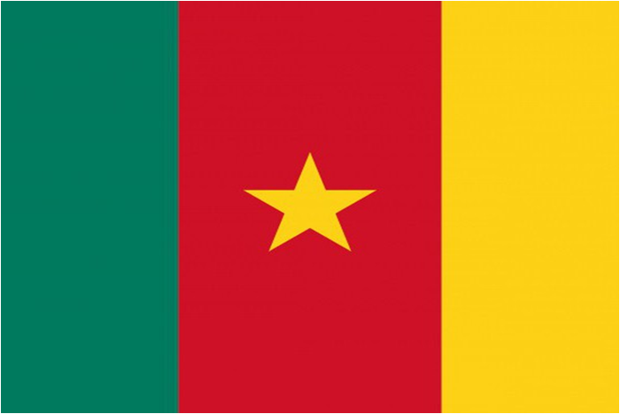

FAQ
What do you know about “Cameroon”?
Cameroon, officially the Republic of Cameroon, is a country in west-central Africa. It is bordered by Nigeria to the west and north; Chad to the northeast; the Central African Republic to the east; and Equatorial Guinea, Gabon and the Republic of the Congo to the south. Its coastline lies on the Bight of Biafra, part of the Gulf of Guinea and the Atlantic Ocean. The country is sometimes identified as West African and other times as Central African, due to its strategic position at the crossroads between West and Central Africa. Its nearly 25 million people speak 250 native languages.
Camerun Flag:
The colors used are the traditional Pan-African colors and the tricolor is inspired by the French flag. Established in 1975.  Colors meaning:
- RED: symbolizes union and the star also indicates union.
- YELLOW: symbolizes the sun but also the savannah of the northern part of the country.
- GREEN: symbolizes the forests of the southern part
Cameroon history:
The territory of present Cameroon was inhabited during the Neolithic period. Portuguese sailors reached the coast in 1472. Over the following centuries, European interests regularized trade with coastal peoples and Christian missionaries pushed inland. In the early 19th century, Modibo Adama led Fulani soldiers in a jihad in the north against non-Muslim and partially Muslim peoples and founded the Adamawa Emirates. The peoples who fled the Fulani caused a great redistribution of the population. The German Empire claimed the territory as a colony in 1884 and began a constant push within. With the defeat of Germany in World War I, Cameroon became the territory of the League of Nations and was divided into French Cameroon and British Cameroon in 1919. The French carefully integrated the Cameroon economy with that of France and improved the infrastructure with investments. capital, skilled workers and continued forced labor. The British managed their territory from neighboring Nigeria. The natives complained that this made them a neglected "colony of a colony". The mandates of the League of Nations were converted into United Nations Associations in 1946 and the question of independence became an urgent issue in French Cameroon. France banned the most radical political party on July 13, 1955, the Union of Peoples of Cameroon (UPC). This led to a long guerrilla warfare. In British Cameroon, the question was whether to reunite with French Cameroon or join Nigeria. On January 1, 1960, French Cameroon gained independence from France under President Ahmadou Ahidjo, and on October 1, 1961, the old British northern Cameroon became part of Nigeria, while the former British southern Cameroon joined with his close to form the Federal Republic of Cameroon.
Policy:
Cameroon is a republic unitary of equatorial Africa whose capital is Yaoundé. The current president is Paul Biya. Cameroon became a German colony in 1884, but after the First World War the territory was divided between France and the United Kingdom. Compared to other African countries, Cameroon enjoys political and social stability.
School:
Compulsory school: compulsory education lasts 10/11 years (from 6 to 16/17 years) and are divided into:
- Kindergarten
- Primary School (lasts 7 years)
- Secondary School (lasts 5 years)
- University
Infrastructure technologies:
Cameroon has one of the lowest internet usage rates in the continent of Africa and, despite a penetration rate of Constantly growing internet (which has experienced average growth of 14% per year between 2007 and 2011) remains one of the least countries connected to the world, with only 6% of its population online in the 2013: Cameroon has three international submarine cables which land on its territory (SAT-3, WACS, ACE), but only one of these cables (SAT-3) were in use as of May 2014. With only one cable submarine in service, the international bandwidth in Cameroon remains low at 340 gigabytes: a figure that is a lot behind some of its West African neighbors 2017 IXP project was founded with the aim of maintaining the local Internet communication. Aims to build capacity technique of the beneficiary country in the management of the exchange point Internet and to provide, where necessary, the necessary equipment for the establishment of the Internet exchange point. There were 7.87 million Internet users in Cameroon in January 2020. The number of users Internet in Cameroon increased by 570,000 (+ 7.8%) between 2019 and 2020. Internet penetration in Cameroon was 30% a January 2020.

 Back to home
Back to home